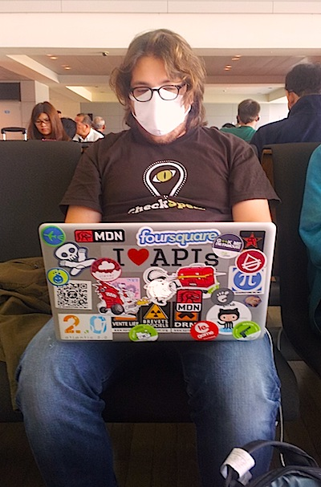

Après avoir lu l’article terriblement agressif de Com&Médias (une triste affaire de tension dans le slip: qui se lit ici), je m’interrogeais sur le manque d’information et de compréhension suscité par le changement de notre monde : nous entrons dans une ère nouvelle de création de concepts, de contenus et d’interactions, rapidement et sans peur de l’échec.
Un bon startuper y croit. C’est une généralité qui lui permet de faire avancer ses projets, son ambition. Lorsque j’ai créé ma première entreprise à 19 ans, nombreux furent ceux qui m’intimèrent l’ordre de rentrer dans le rang : je n’étais pas prêt, pas compétent, pas crédible… Des années après, je réalise que cette inexpérience était le meilleur terreau pour créer de l’innovation : un management sans pareil, des technologies très innovantes, des idées de business model… Il faut savoir partir d’une page blanche pour inventer.
Parfois, vu de l’extérieur, on se dit qu’un startuper s’y croit. Mais pouvez-vous imaginer la dose monstrueuse d’optimisme et d’auto-conviction qu’il faut pour faire avancer des concepts aussi innovants et de rupture que Clever Cloud ? L’énergie demandée est considérable. Concevez-vous la difficulté de convaincre Adecco de prendre DoYouBuzz, le géant se confiant à un lilliputien ? L’énergie débordante qu’il faut pour sortir un Lengow de terre en deux ans ? La vitesse à laquelle ça va est grisante et effrayante…
Cette façon de vivre était très bien exposée dans le documentaire The startup kids diffusé au Katorza il y a quelques jours par Romain Saillet. Si vous faites partie des gens qui ont lu l’article de Com&Médias en hochant la tête, regardez-le.
Pour tout ceux que ce nouvel ordre dérange (pour les autres aussi), je recommande la lecture de “Petite Poucette”, un livre du remarquable Michel Serres ( voir sur amazon). Cet homme a 83 ans mais continue à voir le monde de façon neuve et sans haine. Il admire la révolution dans l’évolution de l’homme qui se prépare : une nouvelle façon de penser, de stocker et d’intéragir avec la connaissance humaine, une nouvelle façon d’employer son cerveau. Ce n’est pas long, c’est bien écrit, c’est intelligent. Lisez-le.
Notre monde évolue, notre façon de travailler aussi, notre façon de produire de la richesse va changer. C’est grâce à des gens comme Michel Serres que nous ne nous perdons pas en route. C’est grâce à des gens qui signent courageusement “rédaction de Com&Médias” que nous n’avons pas de Google ou de Facebook en France : le doute, la moquerie, l’incompréhension, la volonté d’immobilisme, des “bonnes vieilles méthodes”, du “tu verras plus tard quand tu seras grand” et des empêcheurs de rêver en rond. L’innovation se trompe souvent, mais essaye beaucoup, alors laissons-lui sa chance et encourageons-la !
J’invite les sceptiques à rencontrer les geeks :
Pour une partie d’entre eux, sur le business, lors de la SoChik2BeGeek le 28 mars
Pour ceux qui veulent rencontrer des devs/sysadmin/geeks/barbus, l’Aperogeek (4 ans déjà) reprend du service lors du 13 mars
Il ne faut pas prendre cet article comme une agression, il est plein de tendresse, mais on ne peut pas se faire insulter gratuitement, et tous les membres du Company Campus se sont réellement sentis insultés et incompris, d’autant que la plupart porte des caleçons.